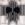

|

Slade13
Author of 7 Stories |
He stood there before the door.
His charge on the otherside.
He paused but a moment.
A moment in remembrance.
Amazed at what he had become.
No longer the murderer he once was.
Now he was a protector.
But today he knew his job was over.
He knew this day would come.
The day of the ball.
SENSHI
Chapter 03
Shrouded Sun Arising
03-01
Ranko stood in the middle of her backyard, plagued with uncertainty. She looked at her right hand as if it held all the answers. Behind her, Nodoka continued to work on her small, but beautiful garden. A harsh wind blew, but it went unnoticed by the somber teen. Her left eye reflected the still bright rays of the sun as it began it's descent toward the horizon. But despite the warmth the sun gave off, her eye remained sheathed in a diamond hard layer of ice.
Before her was the evidence of battle, yet she didn't remember how she got a single one of those injuries. She couldn't remember her father, her friends, even what year it was. Her expert eye told her that the wounds on her body where from the heat of battle, but she couldn't remember with who. She knew she had a duty to uphold, but not to what. Her heart was frozen, yet it told her she was in the right place... Just not the why.
The only things that she remembered when she woke up was that Nodoka was her mother, that this was her home at some point in her life... and one other thing. And that was what alluded her at that moment; the meaning behind those two little words...
"Why can't I remember?" she voiced in a horse whisper.
With that she left the garden as she knew that her mother would soon begin still had to finish her homework and wash up. And if nothing else, she wanted to see her mother happy. If doing boring homework and the such would help toward that goal then so be it...
But that still left her with the question:
"Who or what is Dark Star?"
-03-02-She had barely held herself together. Setsuna's ever-present stoic mask was quickly crumbling under the stress of the current mysteries that assaulted her psyche. She closed her eyes and let herself be rocked and comforted within the arms of her future queen. Slowly she felt all of her worries float away, the searing pain of the past once again becoming a dull ache. 'So this is what it feels like to be in the arms of someone like Serenity-hime. ...But, ...I have felt like this before, ...Haven't I?' Just then a single image bursts in her mind's eye. A woman in white battle armor with a regal bearing holding her in much the same way... a dark castle behind them was crumbling. 'When did that happen? ...Wait, could it have been at the end of the Gold Millennium Empire? Then the woman holding me was...' Suddenly another vision flashes. This time of Setsuna comforting a boy in much the same way as Usagi was her. Even in her grief her sharp mind catches on to one very important detail. While the boy had pitch black hair... her hair was NOT green. After that a hazed frenzy of memories assaulted her with joyfilled days of a youth she thought she never had, of an important duty she accepted, and almost unbearable pain that accompanied the remembrance of the consequences of her choices.
"Setsuna-mama? Are you ok?" Hotaru, never having seen the guardian of time lose control of any aspect of her being, was understandably worried.
Setsuna shook with pain-filled remembrance as Usagi... no... Princess Serenity, only held the ancient woman tighter while making soothing sounds and rocking her gently. It was a strange sight indeed for the other senshi. Slowly the Senshi of Time began to quiet and then fall into a calm slumber. All the senshi, aside from the two who were the center of attention, were amazed. It was rare that the true nature of the princess of the moon was even seen as a glimmer in Usagi's eye; rarer still when she took physical form. Even then she only appeared when the time was dire and the senshi needed a great pillar of strength to draw from.
At first the relative thought shared by the princess' guardians was shock. After all it's not everyday that the guardian of the gates of time breaks down. But it's another thing entirely when it takes the reborn heir to a long fallen kingdom to take her true form to comfort her.
"Is she-" Michru began, only to be gently silenced by Serenity.
"Shhhhhh... Let her rest," Princess Serenity spoke softly. Looking down at the slowly relaxing face of Setsuna, she couldn't help but smile. "You've been a guardian for so long. Just rest. You all. Rest for now. There is still time before we face our past and future." Though she was only whispering, her voice carried with the same authority and caring of her past self. Though her words were not orders, her guardians took them as such and all in the room visibly relaxed. Then they remembered, Serenity always appeared when they need her most. She was the calm in the storm. She was their pillar and hope. She would never back down. She would never give up. And she would know when to fight and when to sit a take a deep breath.
Now was such a time.
-03-03-On a beautiful, wind swept plain long since forgotten to time two children frolic and play while giggles and shouts fill the air with a rare joy not commonly found any where near their home. She watched them from afar as they naively defied that somber shadow that had fell over the castle. If all went well the children would be able to break free of they bloody destinies. But one must always have a back-up plan. She looked to the woman beside her and wondered if just such a plan would have to be implemented.
Standing there on a hill that over looks the plain were two women of regal bearing. The first was clad in dark purple, almost black full plate armor. It was simple and sleek in design, emphasizing on mobility and grace. On the breast plate was the crest of pluto. As she wore no helmet, her ivory locks fell free of any confinement down to the small of her back. At her hip, an elegant long sword and cradled in her gentle fingers was the legendary Time Staff. The other wore a kimono of such exquisite form, fit, and style that one could only describe it as divine. Clothed in fiery reds, bright yellows, shimmering golds, and sparkling blues; she appearance could be described as nothing less then like the sun in the sky. Upon her brow she wore a circlet that was simple in design, it wrapped around her head straight and true till it reached the front. an inch from where the gold of the band would have met, the ends curved counter balanced to each other, the right side bending upward in a quarter circle while the left went downward in like manner. The flesh contained within the implied circle shone with the crest of the sun. Her long red hair danced in the wind like fire and her youthful eyes were like the summer sky.
"Setsuna?"
"Yes M'lady?"
The woman in gold looked on with sadness in her eyes, causing them to sparkle just a bit less, "Do you think we will ever have to implement the back-up plan? Will the children really have to suffer? Was it really necessary to create such an option?"
The Guardian of Time looked at her Empress with soft concern, "The future is, at this point, uncertain. Nothing would make me happier then to see such a horrid course of action never to come into fruition. However, by the same token, if the worst does occur, this is our only salvation. Fear not, M'lady, no matter what happens those two will have the chance to life happy lives."
Just then, two bundles of energy slammed Pluto onto her back. Twin orbs of stormy blue peered into her soul, the joy of innocence burning bright within. Sitting beside those windows into mischief were a pair of equally jovial cute, brown eyes looking at her in expectation. For a moment sorrow plays acrossed her face, but she quickly schools her features so as not to worry the young lord or his companion sitting on her chest. The Empress doesn't miss it however.
"Granna 'Suna, will you tell us a story? Please?" The cherubic bundles of energy pleaded in chorus.
"If you mother says it's alright, then yes," Setsuna shot a look at the shimmering lady of the sun.
"Like I would every deprive either my son or his best friend of hearing the greatest storyteller in all the realm weave her tales," her highness hid a small smile behind her sleeved hand. "You are dismissed, Lady Pluto. And don't spoil children too much."
In good humor, Pluto replied, "But that just takes the fun out of it." With that she gathered the future Emperor and his future bride to be in her arms.
The Empress watched them leave with a concern deeply etched into her features. 'For your future my son, my little Ranma, I would sacrifice everything. If the time comes, then I swear I will do everything in my power to see to you survival. I swear on my mothers grave, and upon my title: Amaterasu Oumikami, Empress of the Gold Millennium Empire."
-03-04-The sun began to set in the mountain to the west of Tokyo as a shadow watched for atop the infamous Tokyo Tower. The figure's tattered cloak billowed in a soft gale. As quiet winds whispered of coming omens of darkness, the figure stood vigil in deep contemplation.
"Soon..."
A great blast of violent winds tore at the man's cloak, pulling away the hood slightly to reveal a heavily bandaged face. While the tattered cloth still hid most of the person's face, the left eye was clearly visible. It's visibility was helped greatly by the fact the it was glowing a bright crimson.
"Blood of Tsuki-Yumi, prepare yourself for the coming storm."
Another gust passes, and shadows pass over the figure. When the shadows pass away and the wind dies down, the space the figure once occupied was empty.
-03-05-Rei had left just after Setsuna's suprising breakdown and decided that it would be a good idea to do that fire reading she mention earlier. And so there she sat, having just completed the clairvoyent exersize; more confused then when she began. The vision she had recieved was strange, as she had expected; but did not reveal anything even nearing conclusive.
In he vision, four crests floated; two on one side, the crest of Sol and the crest of Nemesis. On the other side, leaving about eight inches between them, hung two other crests of unknown origin. As she watched, the first two crests combined into the now all to familiar crest of the Gold Millennium and began to float over, leaving behind a shadows of both a step behind. It's current possition put it at four inches form the other two; the shadows that remained touched the edge of each other and of the first. When she thought it couldn't get any stranger, the crest moved once more, the shadows repeated the actions of the first crest with it. Oddly the original seperated slightly for a few moments, so now there was a total of seven crest in front of Rei.
Just a moment after the original two recombined, the last shadows fused together and moved to where the first shadow was, overlapping and becomming one shadow again. Then then the shadow overlapped the original crest. The crest of the Gold Millennium seperated back into it's core crests; Sol overlapping one, Nemesis the other. Finally, the original crests took the form of the last two strangers.
When it was over, all Rei knew was that she just watched a transition. But what it meant for the team was totally lost to her. Deciding that maybe that maybe Ami or Pluto might know better, she left to return to the meeting.
-03-06-Slowly Setsuna opened her eyes. Taking stock of her surroundings she schooled her features and left the comforting lap of her future queen, sat up and gathered her thoughts. Looking at the time she found to her surprise that it was already time to leave. 'Didn't I really sleep for that long?' Taking a careful eye about her surroundings she noticed that though not everyone was sleeping, all the senshi were in one fashion or another resting. The first to notice her current state of consciousness was Hotaru, who was taking a nap in the time guardian's lap.
"Oh, Setsuna-mama, your awake. Are you felling better now?" the little firefly spoke with worry creeping into her voice.
Setsuna couldn't help but smile, "Yes Hotaru, I'm feeling much better thank you. Now if everyone would get up we have a job to do." At this, all but one of the people in the room nodded their agreement; including Rei, who had just walked in.
"I can't believe this; one moment she is the most regal and authoritative, yet gentle and kind person I know... The next, back to being a meatball-head!" Rei spoke with equal parts awe and rage. Then she got an evil idea, 'Well she always wants my manga... how about I just give it to her?' Picking up one of her manga of the table, Rei took aim and fired, earning a bulls-eye and one startled princess. "Wake up, meatball-head, it's time to go!" she yelled.
Rubbing her forehead while she glared at one of her best friends, "Rei, you don't have to be so mean, you know." Suddenly she became almost Kasumi-level of cheery, "Well, let go then!"
With that she ran out to talk to rei's grandpa, saying something along the lines of them going for a bit to eat and being back later. All the while the senshi all stood there, yet again amaze by both Usagi's new level of maturity (or ditziness, one could never tell with her) and the amazingly quick change of attitude. Before they knew it, she was back with a big smile on her face.
"Come on guys, we have a date with destiny, and destiny never waits," She said, to which her friends only replied with a nod. As sudden as she was there, she was gone and reality finally settled back into the remaining soldiers. After a quick shared shrug, they left to once again fight for love and justice.
-03-07-On a fairly crowded street near by, a couple stopped and looked at a strange spot on the sidewalk. Even after a week, the blood still stained the ground.
"Look honey isn't this where that sad, dieing girl finally fell?" the girl asked.
The boy hesitated for a moment to remember, "Yeah, it is."
As common with Juuban, there were screams filling the night as yet another youma, or something of the like began attacking the pedestrians. Well they thought it's was business as usual till they turned to see the monster of the week before they ran. What they saw however didn't match the norm in any way. Of course the site before them was also the last thing they every saw.
Tonight there would be more then just a stain as remembrance.
-03-08-Not ones to waste time, the senshi ran at full tilt toward their destination. Hopping form pole to pole, dashing down alleys, rounding corners at speeds that even the Nerima Wrecking Crew would be jealous of. As they made their way they continue to lay out any probable events. Given their experiences dealing with enemies of all shapes and sizes, they had plenty of material to go on. "Pluto, does that scroll say anything else besides the time and place, at least a hint of what we're facing?" Mercury inquired.
Pluto frowned at this "No, nothing. Which is why I'm worried. Prophecies never mention anything unless there is something important. What about you, Rei? Did you get anything in your reading?"
Rei thought for a moment before answering in an unsure tone, "Well, I got something, but I don't know how it could relate to our current situation."
"Well, for now we'll just make do," Pluto sighed. "Even if this battle were just another run-of-mill, there will still be something off about it that we should look for."
Suddenly Sailor Moon stopped, and took a step back into the alleyway she had just exited. In a quite quivering voice she spoke, "Is this... 'off' enough?"
The other senshi quickly took they're positions and surveyed the... well street no longer described it in the slightest.
More like massacre.
There was cars wrecked, not too uncommon of a sight. People laying about in the street was also quite expected of this particular ward of Tokyo. The fact that the people were rent limb for limb and the street bathed in blood was definitely a new experience for the pretty soldiers. Add the fact that their monster-of-the-week was actually feeding on the flesh of said citizens adds a whole new level of fright for the heroines who are use to more... civil evil miscreants. Of course there was also the monster itself to take into account.
The strange beast turned toward them, the visor of it's helm was an empty void of shadow. It stood at about ten feet in height wearing a heavy breast plate with a small shoulder guard on the right side, and a much larger on the left. In it's right hand it brandished a sword that was more of a nine foot, decorated slab of steel. Clapped on it's left arm was what one would describe in measurement as a tower shield; but looked on it's arm to be more closer to a regular, if not small, shield. The head of the monstrosity was clad in a strange helm that looked to be a cross between the common English knight helmet and a demon's skull, it was hard to tell if it really was a piece of armor more then the actual head of the beast as the "jaw" move as if it's own. Upon the helm-head, a great mane of crimson bordering on darkness spilled down it's back. The rest of it's form was as black a shadow, though it's physical form was proven by the evidence of the blood from the victims splattered all over it's features. The hand and feet ended in vile, crimson hued claws. The armor itself was either painted to look like dried blood or it had been so saturated that it no longer mattered. The last and most important detail was the crest in the center of it's breast plate.
Pluto paled. "a knight of the gold millennium empire," she whispered in horror filled awe.
A voice, or what was like a great multitude of voices oozed out of it's maw, speaking with vile mirth, "Ah, so you have heard of us. Like it will do you any good. who are you?" It drawled while tilting it's head to the side in curiosity.
Sailor Moon hesitated before getting into the familiar role of the 'heroic introduction' "Murder is a loathsome sin, a blot on the beauty of humanity and a stain on the sanctity of life. We fight for love and justice! I am Sailor Moon..." Having heard the familiar 'call to arms' the other Senshi took their positions and called out their titles.
"Sailor Mercury!" was issued without preamble.
"Sailor Venus!" was cried out with practiced ease.
"Sailor Mars!" was called out in certainty.
"Sailor Jupiter!" was spoken almost as a challange.
"Sailor Saturn!" was revealed plainly, though with hidden threat.
"Sailor Uranus!" was said with an assurence of victory.
"Sailor Neptune!" was ushered through passionate, yet elegant lips.
"Sailor Pluto!" was yelled in equal parts power and fright.
With the tension eased slightly by the familiar territory, Moon finish her speech. "...And in the name of the Moon, we shall punish you!"
Long ago they had realized how absolutely corny that always sounded, but it had became a part of how they did things. Funny thing is no one really ever laughed at their speeches.
"!"
Till now, that is.
"Guys, I don't think he's taking us seriously," Venus fretted.
Pluto sobered up at this, "He doesn't have to."
"WHAT?" the other senshi made their thoughts known to the world.
"Just that, even with all of our power combined, nothing in our arsenal short of Saturn destroying the world will take this guy down." They all became silent.
Finally Jupiter spoke up, "So, we've face enemies that were stronger then us before and we came out on top. I say we go for it, if we are going to lose anyway I'd rather go down fighting."
Sighing, Pluto looked straight at her teammate, "You don't understand. Our powers don't have the strength to punch through that beast's defenses."
Uranus looked at the Guardian of Time, speaking with a self assured smile, "I agree with Jupiter, we should at least take a crack at it. After all, we'll never know till we try. I mean, we can't just leave that thing to reak havok though OUR city!"
Pluto sighed in resignation as the other senshi consented to the point their resident lighting rod and long winded tomboy had made. All the while the beast continued to bellow it's laugh. Without wasting any more time on speeches, the nine soldiers of love and justice lets loose all they had on the beast. Even as 'he' felt their power collect he just continued to stand there and laugh. The odd thing was it wasn't that usual 'evil maniac' laugh, or the 'I know something you don't know' laugh. No, the creepy thing about this laugh was that is was a real laugh, a 'this is just too damn funny not to laugh' laugh. While it scared the heck out of the senshi, they continued down their chosen path.
With the shouts of the names of their respective attacks, the Sailor Senshi let loose with 'both barrels'. Fierce flames, frigid ice, thunderous winds, shocking lightning, Rushing waters, blinding light, distubing silence, harsh entropy, and powerful purity erupted as one; causing the battle zone became a malestrom of lights in amost ever shade of color and elemental chaos rained down on the street blowing out windows, shattering store fronts, and sending asphalt and concrete every which way. As they continued their onslaught upon the monster, they found some solence in the fact that everyone in the area was already dead; they pooled every bit of magical force they could scrounge, the entire area bathed in the strength of the fuku-clad, magic girls. After they were spent of all their power, they gathered acrossed the street from where their nemesis once stood, waiting for the dust to settle to confirm their kill.
Uranus looked at the war-zone they had created with mild impatience, "Come on guys, nothing could have survived that."
Before Pluto could even say a word, a multitude of voices took the words right out her mouth, "I wouldn't be so sure. I am disappointed; amused, but disappointd. Is this all the spawn of Tsuki-Yumi has to offer? You aren't even using your lowest level techniques. Just those silly palor tricks used for practice. Know this: I am a Shadow Knight of the awesome Gold Millennium Empire! If I was going to let you live, I would have advised you to get some real training and take those ridiculous locks on your powers! But that would be -IF- I was going to let you live. Oh well, time for dinner!" With that said, he proved to things: One) he was light-years beyond the fastest youma deamon or any other beast they had ever fought. Two) That armor they thought was covering his mouth was, indeed his mouth, teeth and all.
In less time then it takes for Usagi to finish of the crackers at a meeting, he tore into every one of the guardians. With the flat side of his sword he sent Mercury creaning through a telephone pole and into a cake shop acrossed the street with a meaty 'thwack'. Jupiter was next and with a harsh, downward strike with it's shield, the beast made her a simi-permanent part of the black-top. Saturn was sent with a full force, soccer style kick through the engine block of a nearby Nissan Pathfinder. A merciless pile-driver put Pluto into the street next to Jupiter. Uranus and Mars met the business side of the beast's shield as he violently bashed them though the unforgiving wall of a chinese restaurant and into a not so bliss-filled sleep. Finally, wearing a gleeful smirk, the evil knight not-so-politely introduced Venus and Neptune to each other's faces. With all the other senshi put out of commission either by being in excruciating pain or knockout, the shadow knight turned his very much unwanted attentions full to their princess.
"They sure don't make guardians like they used to," he quiped, while trying to stiffle sounds that boarder on insane giggles. Taking a moment to look at his handy work, he turned toward Usagi; having desided his next course of mobid, childish joy. "Now, first I'll feed on your flesh, then that of your friends. I have always wondered what the spawn of Tsuki-Yumi would taste like," spoke the vile beast as he brought his gore-encrusted sword to bare for a killing blow. "Don't worry your little head about it though. This will only hurt for a single, excruciating moment. Hahahaha." With out any further ado, he swung the slab of blood-satined steel in a shrap arc toward the Princess of the Moon. She tightly screwed her eyes shut in absolute terror of what was to come. She felt the sickening splash of blood and the ringing clang of metal... but no pain. Daring to peek, she found an incredible shock before her.
The would-be instrument of her demise was on the ground to her left... and the shadow knight's head had fell between her feat. She looked up in time to see the behemoth's now-dead body fall to the earth; and to see beyond it, a man wearing a large tattered cloak. In his heavily bandaged right hand was a polearm... A very familiar glaive. A dark and tattered cloak and hood covered most of his facial features, helped by more bandages, save for his one red eye glowing with the light of a hot summer's day.
Finally finding her voice she looked straight at him, "w-Who are you?"
A soft, controlled and very even voice answered her.
"You may call me the Shrouded Sun."
-Preview of Chapter 04-Having discovered a lock on their true powers,
the Senshi begin down a long road of hardship to gain their rightful inheritance.
After witnessing first hand another attack by a shadow knight,
Ranko begins to find itvery difficult to maintain the soul of ice needed to keep her sanity.
Meanwhile, the Shouted Sun seems to have his own agenda.
Next Chapter:
"A Storm On The Horizon"

|
Review this Chapter |